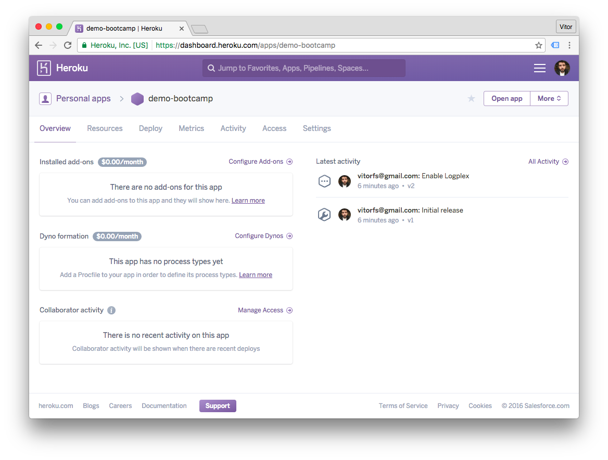
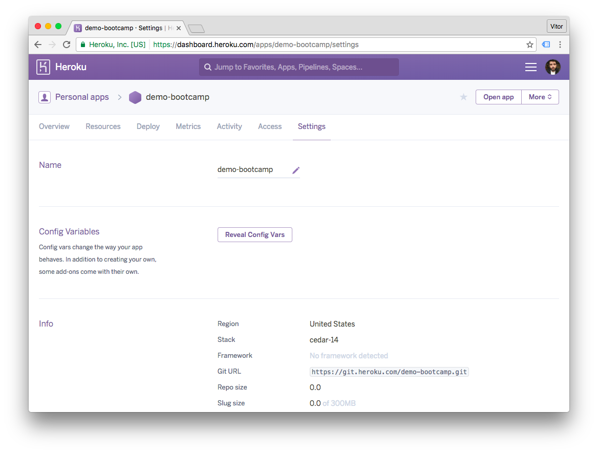
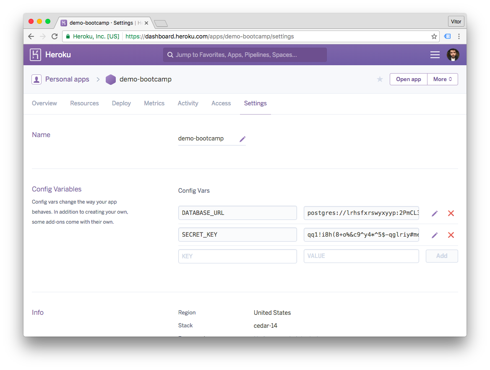
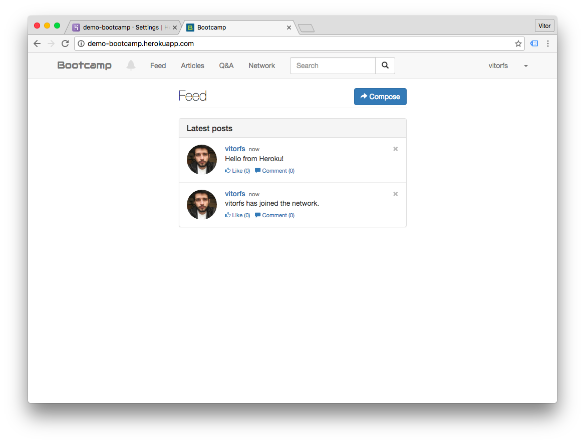

Heroku is a cloud application platform, it is basically a Platform-as-a-Service (PaaS). They support several programming languages, including Python. It is very easy to deploy Django applications on Heroku. They also offer a free plan, which is quite limited, but it is great to get started and to host demos of Django applications.
Install Heroku Toolbelt
Actually, first thing – sign up to Heroku. Then install the Heroku Toolbelt. It is a command line tool to manage your Heroku apps.
After installing the Heroku Toolbelt, open a terminal and login to your account:
$ heroku login
Enter your Heroku credentials.
Email: vitor@simpleisbetterthancomplex.com
Password (typing will be hidden):
Authentication successful.Preparing the Application
In this tutorial I will deploy an existing project, Bootcamp. It’s open-souce Django project I’ve developed a couple of years ago, and it’s also available on GitHub, so you actually can clone the repository and try it by yourself.
Basically things will work better if you are already using Git. The Heroku deployment process is done through Git. Your application will be stored in a remote Git repository in the Heroku Cloud.
Anyway, here is the list of things you will probably need to add to your project:
- Add a Procfile in the project root;
- Add requirements.txt file with all the requirements in the project root;
- Add Gunicorn to requirements.txt;
- A runtime.txt to specify the correct Python version in the project root;
- Configure whitenoise to serve static files.
The Procfile
Create a file named Procfile in the project root with the following content:
web: gunicorn bootcamp.wsgi --log-file -Note: change bootcamp with the name of your Django project.
The requirements.txt
If you are using a virtualenv and pip you can simply run:
pip freeze > requirements.txtOtherwise, list the dependencies like the example below. This is how a requirements.txt looks like:
Django==1.9.8
dj-database-url==0.3.0
dj-static==0.0.6
gunicorn==19.6.0
Unipath==1.0
python-decouple==3
Pillow==3.3.0
Markdown==2.6.6
bleach==1.4.3
psycopg2==2.6.1
whitenoise==3.2The runtime.txt
Create a file named runtime.txt in the project root, and put the specific Python version your project use:
python-2.7.12See the complete list of Heroku Python Runtimes.
Set Up The Static Assets
Configure the STATIC-related parameters on settings.py:
PROJECT_ROOT = os.path.dirname(os.path.abspath(__file__))
# Static files (CSS, JavaScript, Images)
# https://docs.djangoproject.com/en/1.9/howto/static-files/
STATIC_ROOT = os.path.join(PROJECT_ROOT, 'staticfiles')
STATIC_URL = '/static/'
# Extra places for collectstatic to find static files.
STATICFILES_DIRS = (
os.path.join(PROJECT_ROOT, 'static'),
)Install the Whitenoise, and don’t forget to update the requirements.txt:
pip install whitenoiseAdd the Whitenoise to your Django application in the wsgi.py file:
import os
from django.core.wsgi import get_wsgi_application
from whitenoise.django import DjangoWhiteNoise
os.environ.setdefault("DJANGO_SETTINGS_MODULE", "bootcamp.settings")
application = get_wsgi_application()
application = DjangoWhiteNoise(application)Update the settings.py
STATICFILES_STORAGE = 'whitenoise.django.GzipManifestStaticFilesStorage'Optional
Here are two libraries I always use when deploying to Heroku, they are not required but they help a lot:
- python-decouple: Strictly separate the settings parameters from your source code. I’ve written an article about it, click here to learn more.
- dj-database-url: This simple Django utility allows you to utilize the 12factor inspired DATABASE_URL environment variable to configure your Django application.
You will see how I use it later on.
Deployment
Alright, enough configuration. Let’s get the deployment started.
First, clone the repository you want to deploy:
git clone https://github.com/vitorfs/bootcamp.git && cd bootcampLogin to Heroku using the toolbelt:
heroku loginInside the project root, create a Heroku App:
heroku create demo-bootcampOutput:
Creating ⬢ demo-bootcamp... done
https://demo-bootcamp.herokuapp.com/ | https://git.heroku.com/demo-bootcamp.gitYou can omit the app name parameter (in my case, demo-bootcamp), then Heroku will pick a name for you.
Add a PostgreSQL database to your app:
heroku addons:create heroku-postgresql:hobby-devOutput:
Creating postgresql-metric-21979... done, (free)
Adding postgresql-metric-21979 to demo-bootcamp... done
Setting DATABASE_URL and restarting demo-bootcamp... done, v4
Database has been created and is availableNow login to Heroku Dashboard and access your recently created app:

Click on the Settings menu and then on the button Reveal Config Vars:

Now we need to add all the Environment variables. Here is where python-decouple and dj-database-url are handy. Here is the list of variables I use on the Bootcamp project:
settings.py
SECRET_KEY = config('SECRET_KEY')
DEBUG = config('DEBUG', default=False, cast=bool)
DATABASES = {
'default': dj_database_url.config(
default=config('DATABASE_URL')
)
}The DEBUG var defaults to False, and DATABASE_URL is automatically added by Heroku upon PostgreSQL database
installation. So in this case I will only need to add the SECRET_KEY:

Push to deploy:
git push heroku masterOutput:
Counting objects: 1999, done.
Delta compression using up to 4 threads.
Compressing objects: 100% (616/616), done.
Writing objects: 100% (1999/1999), 461.28 KiB | 0 bytes/s, done.
Total 1999 (delta 1139), reused 1983 (delta 1131)
remote: Compressing source files... done.
remote: Building source:
remote:
remote: -----> Python app detected
remote: -----> Installing python-2.7.12
remote: $ pip install -r requirements.txt
...
remote: -----> Launching...
remote: Released v5
remote: https://demo-bootcamp.herokuapp.com/ deployed to Heroku
remote:
remote: Verifying deploy.... done.
To https://git.heroku.com/demo-bootcamp.git
* [new branch] master -> masterMigrate the database:
heroku run python manage.py migrateOutput:
Running python manage.py migrate on ⬢ demo-bootcamp... up, run.9352
Operations to perform:
Apply all migrations: questions, sessions, authentication, articles, feeds, contenttypes, messenger, activities, auth
Running migrations:
Rendering model states... DONE
Applying contenttypes.0001_initial... OK
Applying auth.0001_initial... OK
Applying questions.0001_initial... OK
Applying feeds.0001_initial... OK
Applying articles.0001_initial... OK
Applying activities.0001_initial... OK
Applying contenttypes.0002_remove_content_type_name... OK
Applying auth.0002_alter_permission_name_max_length... OK
Applying auth.0003_alter_user_email_max_length... OK
Applying auth.0004_alter_user_username_opts... OK
Applying auth.0005_alter_user_last_login_null... OK
Applying auth.0006_require_contenttypes_0002... OK
Applying auth.0007_alter_validators_add_error_messages... OK
Applying authentication.0001_initial... OK
Applying messenger.0001_initial... OK
Applying sessions.0001_initial... OKAnd there you go! Try the URL in a web browser: http://demo-bootcamp.herokuapp.com/.

Wrap up
This is pretty much it. Heroku is a great service, but it is kinda expensive. For some hobby/non-production applications you can find some cheaper alternatives.
Be aware of some limitations of the free tier:
- The application “sleeps” after 30 minutes of inactivity. The first access after it might be slow.
- The free PostgreSQL database has a limitation of 10K rows.
Also if you need to store user uploaded files (media), you will need a service to store the files. The most common option is Amazon S3. This applies to every tier.
 A Complete Beginner's Guide to Django - Part 7
A Complete Beginner's Guide to Django - Part 7
 How to Deploy a Django Application to Digital Ocean
How to Deploy a Django Application to Digital Ocean
 How to Extend Django User Model
How to Extend Django User Model
 How to Setup a SSL Certificate on Nginx for a Django Application
How to Setup a SSL Certificate on Nginx for a Django Application